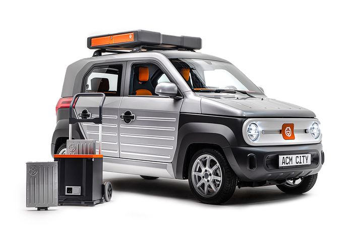

Empat perusahaan China yakni Nio, Geely, Aulton (pengembang battery swap), dan Sinopec berkongsi untuk membangun total 24.000 stasiun pertukaran di seluruh negeri pada 2025. Jumlah itu cukup fantastis, mengingat saat ini hanya terdapat 1.400 stasiun penukaran
daripada mencolokkan kendaraan ke titik pengisian. Teknologi penukaran baterai ini lebih realistis dibandingkan fasilitas isi daya yang bisa memakan waktu lama dan menyebabkan antrean panjang seiring bertambahnya pengguna EV. Persoalannya, untuk memperluas penggunaan teknologi penukaran baterai, harus terdapat komitmen atau kebijakan yang mampu mengarahkan penyeragaman teknologi baterai dari tiap produk masing-masing produsen. Alhasil, kemajuan teknologi penukaran baterai di China dalam model bisnis EV pun ditunggu banyak pihak. Sebab, saat ini mayoritas produsen EV, terutama berasal dari Amerika dan Eropa seperti Tesla, Volkswagen dan General Motors merancang produk dengan baterai ekslusif, dengan fasilitasi pengisi daya sendiri.
Di lain sisi, perkembangan industri EV di Indonesia pun tengah menghadapi fenomena yang sama. Pemerintah baru-baru ini kembali menerbitkan peraturan terbaru tentang peta jalan, spesifikasi, dan perhitungan tingkat komponen dalam negeri atau TKDN kendaraan bermotor listrik.
aturan tersebut tertuang dalam Permenperin No. 6/2022 yang menggantikan Permenperin No. 27/2020. Secara garis besar, aturan tersebut mengesankan bahwa pemerintah tengah memburu komitmen investasi kendaraan bermotor listrik maupun baterai. Untuk itu, pemerintah memperlebar kesempatan bagi para pemain untuk merakit produk yang diimpor baik secara CKD maupun IKD yang diganjar bobot 20% TKDN. Acuan TKDN dan besaran investasi ini akan menentukan fasilitas fiskal yang akan didapatkan para investor.
Sejauh ini, berbagai kebijakan dan langkah pemerintah itu disebut-sebut telah menggaet investasi baterai, antara lain kerja sama Hyundai Group dan LG Solution yang berinvestasi dalam produksi baterai. Sedangkan untuk teknologi penukaran baterai, belum lama ini Gojek telah memboyong afiliasinya Gogoro yang juga pemain industri listrik pintar asal Taiwan untuk mendistribusikan produk motor listrik sekaligus stasiun baterai.